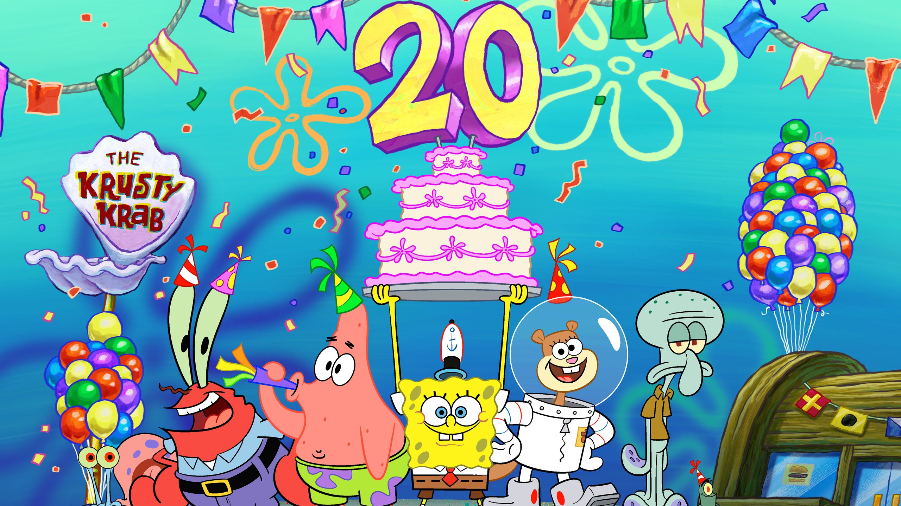

About Spongebob Squarepants
Spongebob is a yellow square sponge who lives in a pineapple with his pet snail Gary who meows like a cat. His best friend is a starfish named Patric who sees himself as intelligent despites his mental setbacks. These two love their neighboor Squidward, who quite dislikes living between Spongebob and Patric.
Spongebob and his friends
- He looks like a kitchen sponge
- He is always super happy
- He loves his work
Spongebobs friends
Spongebobs best friend is Patric, he is super cool and they go for loads of adventures together. Check links below to read more about Spongebobs awesome friends